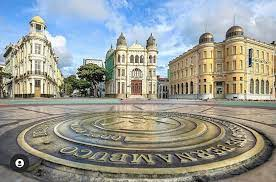

Marco Zero fica localizado em Recife na Praça Rio Branco, e também como ponto inicial de contagem das distâncias calculadas a partir da cidade. O lugar é um dos pontos mais importantes na capital Pernambucana, pois é também uma região de forte movimento durante o Carnaval.

Clique aqui para conhecer mais pontos Turísticos